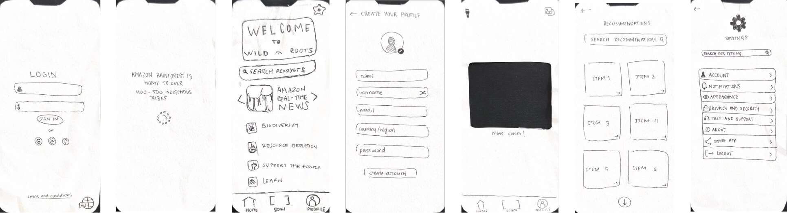
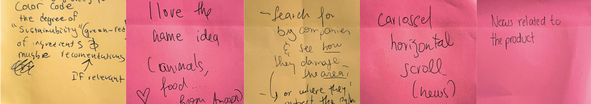
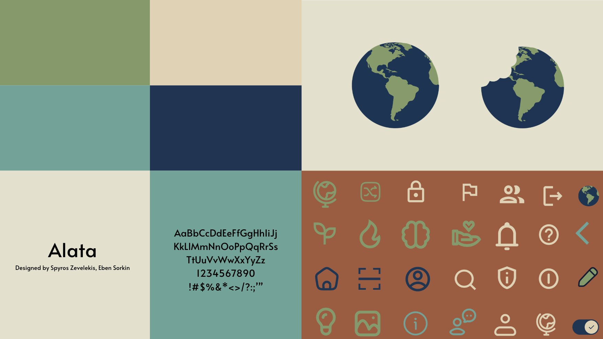
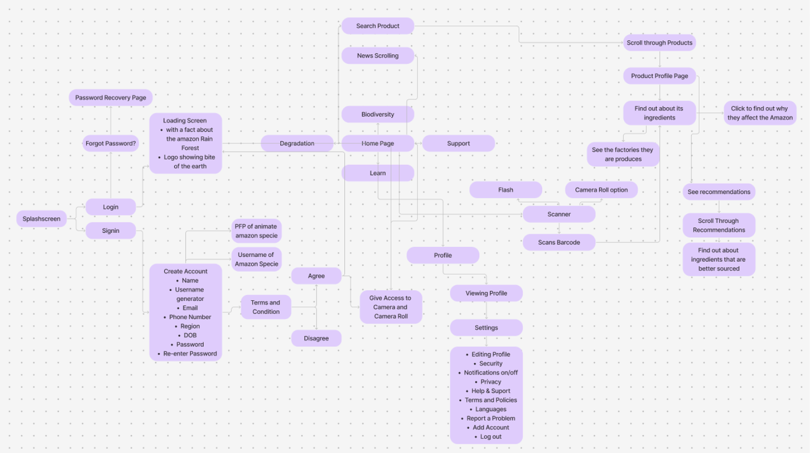
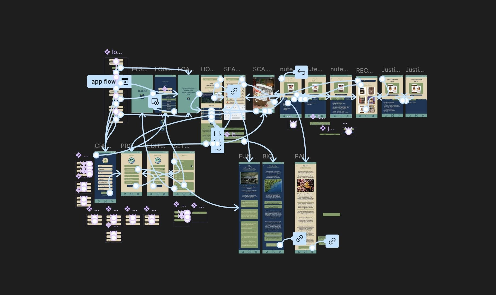
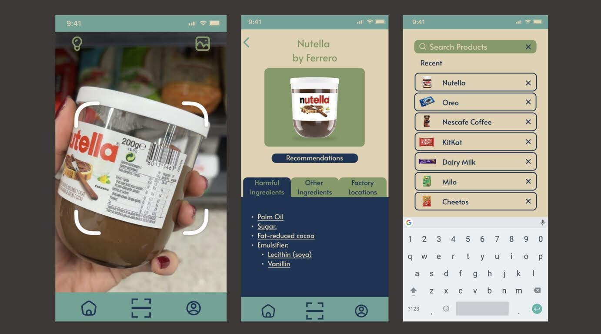
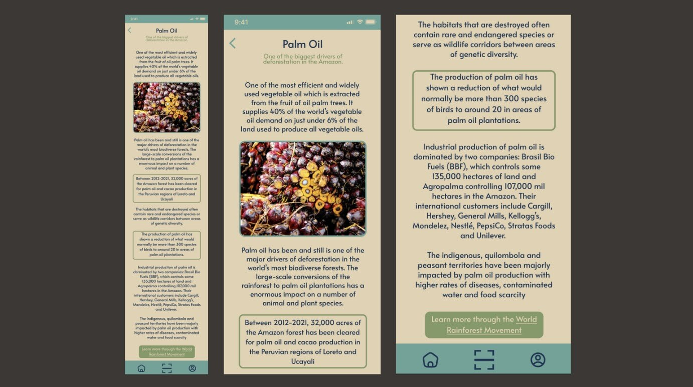
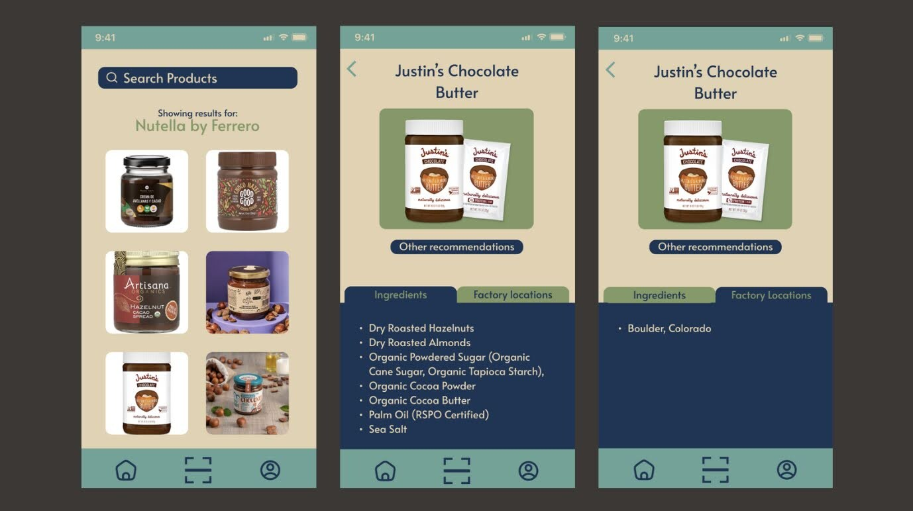
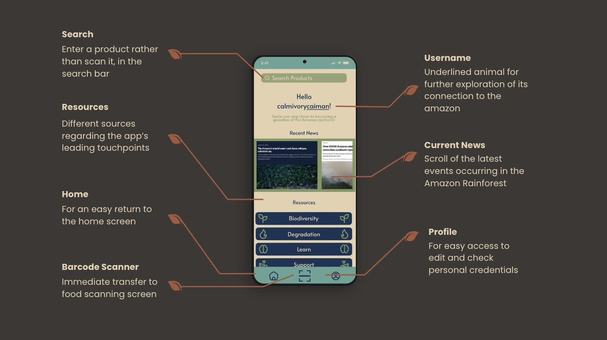

Ideation
Research
We focused our research on the Amazon rainforest — its biodiversity, the threats it faces from global consumption patterns, and what individuals can realistically do about it.
- One of the most biodiverse places on earth — over 3 million species live in the Amazon rainforest
- The balance between all component parts of a biodiverse system keeps the ecosystem and its inhabitants healthy
- Species are threatened as human activity expands deeper into the Amazon
- Deforestation in Indigenous lands and protected areas has skyrocketed in recent years
- Species extinction is happening up to a thousand times faster than it would naturally
Brainstorming
- Informative app
- Digital passport
- QR code scanning system
- Disaster relief
- Reliable news
- Lifecycle analysis
- Ingredient transparency
Focus on UN SDGs
- SDG 9: Industry, Innovation, and Infrastructure
- SDG 11: Sustainable Cities and Communities
- SDG 12: Responsible Consumption and Production
- SDG 13: Climate Action
- SDG 14: Life Below Water
- SDG 15: Life on Land
Target Audience
Persona I
Name: Camilla
Age: 28
Gender: Female
Nationality: Brazilian
Personality: Socially conscious, curious, and eco-minded, values sustainability and fairness.
Interests: Environmental activism, ethical shopping, and supporting indigenous communities.
Persona II
Name: Julio
Age: 65
Gender: Male
Nationality: Ecuadorian
Personality: Caring, community-oriented, and deeply connected to nature. Values traditions and education.
Interests: Julio enjoys spending time with his grandchildren, cooking traditional dishes, reading, and attending local events.
Job-To-Be-Done (J.T.B.D.) Analysis
Situation: When I want to know what impact my food has on me and my environment.
Motivation: I want to scan the given item.
Expected Results: So I can find out accurate results regarding my food impact.
Problems, Opportunities, Insights, Needs, Themes (P.O.I.N.T) Analysis
Problems
Deforestation, resource over-use, exploitation of local communities, unsustainable farming practices.
Opportunities
Petitions, volunteering, news, urgency, reporting illegal actions (mining, hunting, agricultural deforestation).
Insights
Forest degradation increases greenhouse gas impacts, decline in species stabilizing the environment, goes from carbon sink to source.
Needs
Awareness of product life cycles, transparency, partnerships with local news stations, and authenticity.
Themes
Add your Themes content here.
Design Phase
Paper Prototype & Feedback


Brand Guide

User Flow Diagram & Wireframe


Notable Pages



Outcome
